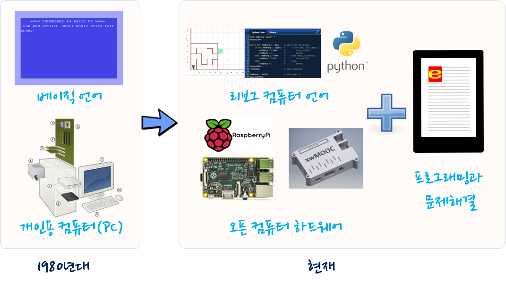

프로그래밍과 문제해결
파이썬, 리보그, 러플
언제나 xwMOOC는 기계와의 경쟁을 준비하는 한국인을 위한 최고의 콘텐츠를 제공합니다. 본 저작물은 미국 항공우주국(NASA) JPL(제트 추진 연구소) 연구원 안드레 카스타노가 미국 남가주 방과후 교육에 수년에 걸쳐 가다듬은 소프트웨어 및 문제해결 교육 과정입니다.
현재 모습의 “프로그래밍과 문제해결”이 있기까지 리보그 저자 André Roberge의 노력과 더불어 xwMOOC에서 $100 달러 오픈컴퓨터를 무료로 공개하여 소프트웨어를 활용한 문제해결 교육이 가능하게 구현하였다.
특히, 1980년대 IBM 호환 개인용 컴퓨터가 보급되면서 베이직 언어도 많이 사용되었지만, 이후 컴퓨팅 패러다임이 변화하면서 소프트웨어를 상업적으로 많이 활용하면서 빌게이츠를 비롯한 소프트웨어 갑부가 생겨나서, 소프트웨어를 생산하는 일부 개발자와 돈 주고 소프트웨어를 사용하는 대다수 사람으로 나눠지게 되었다.
현재도 소프트웨어는 정품을 꼭 사용하는 것으로 이해하는 사람들이 많다. 하지만, 2000년 이후 GNU/리눅스로 대표되는 오픈 소프트웨어와 아두이노로 시작된 오픈 하드웨어, 그리고 저작물에 대한 크리에이티브 커먼즈 등 다양한 자유주의 운동이 확산되고 있으며, 프로그래밍 교육도 예외는 아니다.

영어 원문 및 한국어 번역 사용허가권
이 번역의 원작 “Programming and Problem Solving”는 원저자 안드레 카스타노(Andres Castano, home.acastano.com/)가 영어로 출판하였으며, 번역자 이광춘이 원저자 안드레의 허락을 받아서 번역을 하였습니다. 이 책은 크리에이티브 커먼스(Creative Commons)의 비영리( NC, Non-Commercial), 변경금지(ND, No Derivatives) 라이선스(https://creativecommons.org/licenses/by-nc-nd/4.0/legalcode)에 따라서 활용할 수 있습니다.
The original work of “Programming and Problem Solving” was written in English by Andres Castano, home.acastano.com/. This translation was prepared by permission from Mr. Castano, by Kwangchun Lee. This work is available under the Creative Commons, NC (Non-Commercial), ND (No Derivatives) license https://creativecommons.org/licenses/by-nc-nd/4.0/legalcode.
학습준비
학습주제
| 프로그래밍과 문제해결 | 리보그와 프로그래밍 |
|---|---|
| 1. 프로그래밍 소개 | 1. 리보그와 파이썬 배우기! |
| 1. 명예의 전당 | 1. 기본 사용설명서 |
| 1. 나는 어디에 있나? | 1. 재귀 |
| 1. 문자열 | 1. 변수 |
| 1. 정수 | 1. 리보그 세상 찾아보기 |
| 1. 카렐, 리보그 세상 | 1. 파이썬-개요 |
| 1. 함수 | |
| 1. 조건(if/else) | |
| 1. 재귀 | |
| 1. While 루프 |